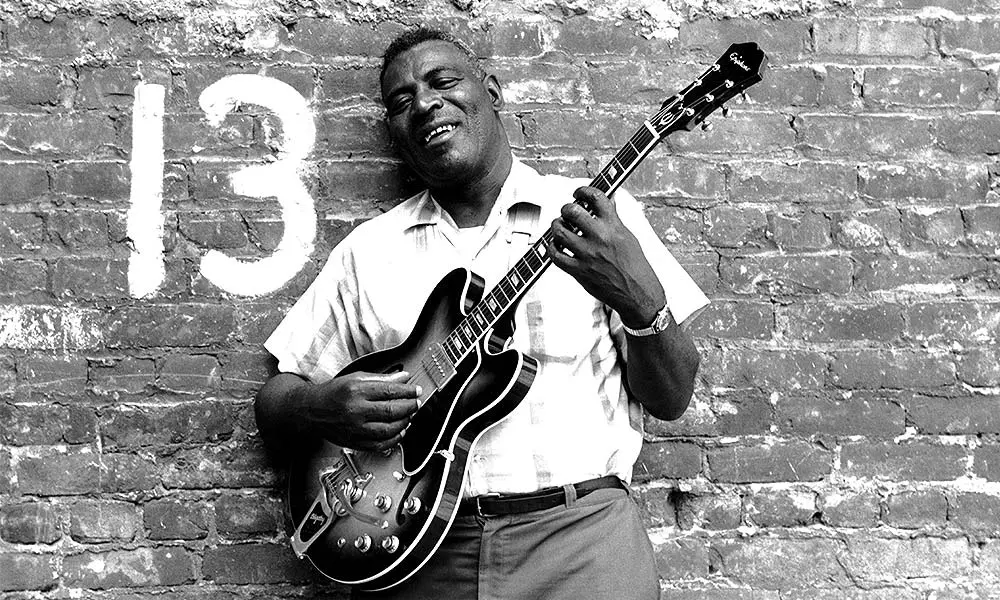

A collection of analyses on different rock songs by Sean Cheng
UNIT 1
Analysis of Smokestack Lightnin' by Howlin' Wolf

↓Listen to the song while you read my analysis!
OVERALL ANALYSIS
Smokestack Lightnin' by Howlin' Wolf is a one-chord blues vamp (an arrangement that is played over and over again) first recorded in 1956. Smokestack Lightnin'
tells a story about a woman who keeps coming and going, and plays with the imagery of a train to act as a double-meaning; where the woman comes and goes like how a train would.
This song utilizes heavy reference relating the woes of the singer's woman leaving with that of a train coming and going, and this is only exacerbated by both the musical and rhythmical choices used in this song.
What is immediately clear from listening to the song is the use of the syncopated snare drum on the backbeat to create the sound of a train chugging, putting emphasis on the train imagery. In addition to this,
the naming of the song "Smokestack Lightnin'" refers to the stack of smoke that can be seen on old locomotive engines from the 50's.
The song's use of a strophic form (where the same music is repeated from verse to verse, but the lyrics are changed) hits home the reptetive feeling of a train chugging along, and further
sends home the message of the woman's coming and going to an almost monotonous feel.
TABLE OF ANALYSIS
Form Section
Time (mm:ss)
Lyrics
Description
Intro
00:00 - 00:10
🎜Instrumental🎜
The song begins with an electric guitar into leading into a syncopated snare drum, mimicking the mechanical noises of a train.
First Verse
00:11 - 00:36
Ah-oh, smokestack lightnin'
Shinin' just like gold
Why don't ya hear me cryin'?
A-whoo-hooo, oooo
Whooo
The first verse begins with a few lines of lyrics, followed by an almost whining "A-whoo-hooo, oooo like phrase. This not only mimicks the whine of a train whistle,
but also represents the singer's lamentation over his sorrows.
Second Verse
00:37 - 01:08
Whoa-oh, tell me baby
What's the matter with you?
Why don't ya hear me cryin'?
Whoo-hooo, whoo-hooo
Whooo
The second verse follows the form of the first verse; with lines of lyrics followed by the song's signature whining. Each verse is separated by a short instrumental,
perhaps signifying the time in between the train's coming and going.
Third Verse
01:09 - 01:34
Whoa-oh, tell me baby
Why did ya stay last night?
A-why don't ya hear me cryin'?
Whoo-hooo, whoo-hooo
Whooo
Yet again, the third verse follows form.
Fourth Verse
01:35 - 02:04
Whoa-oh, stop your train
Let a poor boy ride
Why don't ya hear me cryin'?
Whoo-hooo, whoo-hooo
Whooo
The fourth verse continues the form set in the previous verses.
Fifth Verse
02:05 - 02:30
Whoa-oh, fare ya well
Never see a you no more
A-why don't ya hear me cryin'?
Oooo, whoo-hooo, whoo-hooo
Whooo
The fourth and fifth verse are segmented by a harmonica solo. Its addition is a reprieve from the repetition of the first two verses both musically and rhythmically.
The tone and timbre of the harmonica adds a unique layer of texture to the song, and the vibrato within the solo mimicks a sort of crying or wavering.
Sixth Verse
02:31 - 3:08
Whoa-oh, who been here baby since
I-I been gone, a little, bitty boy?
Girl, be on
A-whoo-hooo, whoo-hooo
A fading out harmonica solo is present near the end of the song. This perhaps represents a fading of hope that the singer's woman will return. It also adds a nice finishing touch to the
song and resolves a hard and brash beat and chord progression.
INSTRUMENTS
Drums: The drums in this song are used with syncopation on beats 2 and 4. The drums are essential in setting the pace and the feel of the song. The drums are key in tying together the train
references along with the true meaning of the song (as discussed in the overall analysis.
Male Singer: Howlin' Wolf's signature croon is integral to selling the wounded man's sorrows that is everpresent in this song. The huskiness in his voice adds a timbre that would make
this song lacking without it.
Harmonica: The harmonica adds a layer of texture to an otherwise repetetive song, and is a metaphor for crying in my opinion.
Electric Guitar: The electric guitar plays the bulk of the blues E minor chord progression.
Meter and Tempo
The song is in duple meter, and the tempo is at a moderate 145 beats per minute. It mimicks a train chugging by with great efficacy. This meter is hit home by the use of strong
syncopated drumbeats.
Creative Assignment - CONCERT HOME REPORT
Comparison of two Tom Misch Concerts
I wanted to do a comparison of two different concerts by Tom Misch.
One in a more private setting, and one on the big stage in front of a massive
crowd. In this creative assignment, I will be doing a side by side analysis
of the two concerts in terms of Tom Misch's performance style and non-musical elements,
as well as an in-depth comparison of one of the songs that shows up on both sets.
Overall analysis
What is immediately noticeable is Tom Misch's compositional style. Tom Misch's music often encompasses groovy beats alongside a
heavy influence from J Dilla's production style, to D Angelo's Neo-Soul chord progressions. This results in musically complex songs that are somehow
easy to listen to for audiences that are not well versed in Jazz. What I found interesting, though, is how Tom Misch adapts his music
between intimate settings and on the big stage. What I like about Tom Misch
is his choice of style. During both performances, his choice of clothing maintains the same, along with the general vibe of his performance. Tom Misch somehow
manages to evoke a sense of the big stage and intimacy in equal measures regardless of setting.
What I did notice, muscially, was the heavier
use of drums and percussion in the big stage performance. His performances on the big stage utilize a greater percussive element to shift the atmosphere from a more chill
and intimate atmosphere to one more evoking of a party or a big performance. This also lends into him utilizng the percussive beat to get some audience participation (as seen
when he asks the audience to clap their hands along to the beat at 19:12 in the Montreux Jazz Festival performance). Upon listening to the two concerts (you can listen to them
yourself in the youtube panels below) there are not many musical differences or performance differences between the two. A difference I did note was the use of improvisation
and solos utilizing the Dorian Scale in his big stage performances. The additional time allows him to really flex his mastery of the guitar.
Analysis of Movie
Tom Misch - Tiny Desk Concert
Starts at 10:44
10:44 - The Tiny Desk Concert version begins with a brief solo from Tom Misch which is not present in the studio recording. Here, he plays the main chord progression
of the song accompanied by a light drum beat. This evokes a very light and intimate feel to the song. Additionally, this intro provides a more personal feeling to the song
as the introduction is improvised and is a departure from the monologue heard in the studio recording.
11:50 - The first verse begins, not much is different between the two version of the song.
12:38 - The second guitar and the rest of the instruments begin to play, this version of the song is much more lighter in terms of texture, as well as having a much more
personal feel to it.
15:00 - The piano solo begins, which is similar to the studio recording version.
Tom Misch - Live at Montreux Jazz Festival
Starts at 26:22
26:22 - The Montreux Jazz Festival version begins with the monologue by Polly Misch as heard in the studio recording, this monologue is backed by a light chord progression.
What is different about this rendition of Movie is that it is definitely a more "true" rendition of the song as compared to the studio version.
27:19 - The first verse begins, not much is different between the two version of the song.
28:08 - The second guitar and the rest of the instruments begin to play, this is a much more full rendition of the song (in terms of timbre) with the number of instruments
adding a level of texture to the song not present in the Tiny Desk Concert. The use of xylophones and other percussion add additional flair to the song.
30:30 - Here, the pianist begins an improvised solo. This is a departure from the studio version of the song, and has a much jazzier feel to it than the piano solo in the
Tiny Desk Concert.
Creative Assignment - COVER SONG
Doja Cat's Say So
This creative assignment goes over a brief analysis of Rainych's Complete Japanese translation and cover of Doja Cat's Say So and how it compares to the original.
Brief Introduction of Rainych's Cvoer
Rainych's cover of Say So is a complete translation from the original in English to Japanese. Every word has been painstakingly rewritten into a
different language and it is remarkable just how faithful the translation is in terms of meaning and verbage. Rainych has even put into consideration
Doja Cat's use of African American Vernacular English with use of the N-word, and changed it to "friends" in her rendition of the song.
Similarities
What I find insane with Rainych's cover is just how similar the cover song is to the original. Rainych has managed to translate all the English lyrics
into a completely different language, and still managed to have the same number of syllables and beat of the original song whilst being entirely faithful
to the original's lyrical meaning. This accomplishment is exemplified in the rap portions of the song (where rap has an extreme emphasis on the amount of syllables in one bar
as it directly affects the rhythm of the song) where Rainych managed to nearly 1-to-1 convert the syllable count from English to Japanese. This lends
an insane feeling of authenticity to the cover, whilst managing to completely change the sound due to the difference in language.
Often times, cover songs utilize a different set of instruments, or a new backing track. In this cover, Rainych uses the original backing track which makes it almost
sound like it could have been the original, or a studio-grade production of the original that was to be released in Japan.
Differences
I personally noticed two major departures from the original in Rainych's cover. First is the changes in a few choice words in the lyrical translations, and second,
the completely different feel of the song in terms of vocal timbre. Doja Cat's Say So is by no means a (for lack of a better term) PG-13 song, with expletives and
more sexual undertones, Doja Cat's lyrics reflects a much more mature and sexually charged story. Rainych, having gained popularity singing vocaloid and anime songs
with a more cutesy feel, does not have this kind of mature and sexually charged atmosphere in a lot of her songs. What is noticeable if you pay attention to the English
lyrics in the upper left corner is that words such as "ass and titties" have been replaced with body, the N-word has been replaced with friends, and swear words have been removed
entirely.
Her vocal timbre is also a major difference to that of Doja Cat's. Doja Cat employs a much more sultry and mature vocal timbre, having a comparatively deper voice,
as well as employing more usage of glissando between words to create that sultry smooth feel to her voice. Rainych's, on the other hand, has a vocal timbre very reminiscent
of anime and Japanese pop songs. Her higher pitched voice as well as a more stacatto inunciation of words removes the sultry feel that Doja Cat's vocal timbre has, and produces
a vastly "cuter" feel to the cover.
These two major departures completely revamp the song and, to me, change the subtle meanings of the song entirely.
Personal Opinions & New Meanings
I personally love the cover, perhaps even more so than the original. I feel that it truly breathes new life and meaning into the song, whilst being faithful
to the original as all cover songs should. I feel that the major differences as outlined above truly change the meaning of the renditions in their entirety, and are
able to change the song more than any drastic change in lyrics could.
Rainych's cover breathes a completely new meaning to the song. Doja Cat's original is a sultry song about Doja's frustrations as a woman when a man she likes
shows interest in her but doesn't (or is too afraid) to "say so". Her frustrations and desires are, in my opinion, fully brought to realization through her vocal
timbre. I feel that the WAY she sings the words she sings makes the song what it means (as can be seen by the completely different interpretation I have of Rainych's cover).
Rainych's cutesy and light vocal timbre moves the song's essential meaning away from lust and frustration, and places the song in a somewhat romantic and
almost slice-of-life feel. It almost seems much more playful than the lamentation of Doja Cat's original rendition. This is only reinforced by the removal of
the more explicit terms that Doja Cat uses when referring to her body, which removes that almost physical lust present in the original.
For fun, here is Doja Cat's reaction to Rainych's cover. Same Doja, Same.